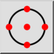
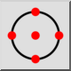
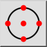
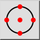

Привязка
Панель инструментов / Иконка:
 

Меню: Прилипание > Привязка
Горячая клавиша: S, R
Команды: snapreference | sr
Это автоматический перевод.
Панель инструментов / Иконка:
 

Меню: Прилипание > Привязка
Горячая клавиша: S, R
Команды: snapreference | sr
Привязка к опорным точкам. Опорные точки - это синие точки, которые отображаются при выборе объекта. Это особенно удобно при привязке к опорным точкам окружностей и дуг, например, при рисовании центральных линий.